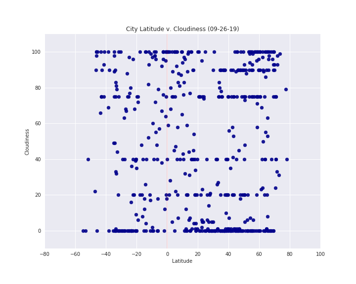
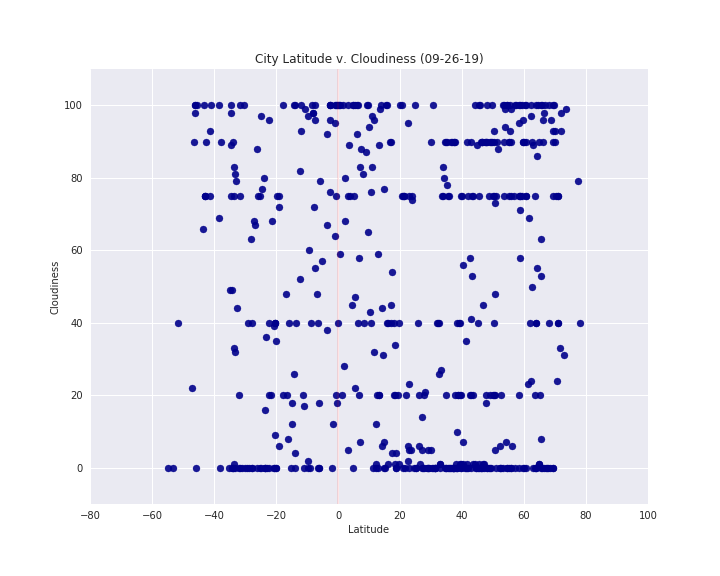

Summary: Latitude, zero attitude...
A Python script was created to visualize the weather of 500+ randomly selected cities across the globe with varying distance from the equator. To accomplish this, a simple Python library was employed, the OpenWeatherMap API, and a little common sense to create a representative model of weather across world cities. The objective was to build a series of scatter plots to showcase the following relationships:
- Temperature (F) vs. Latitude
- Humidity (%) vs. Latitude
- Cloudiness (%) vs. Latitude
- Wind Speed (mph) vs. Latitude
Visualizations
 
